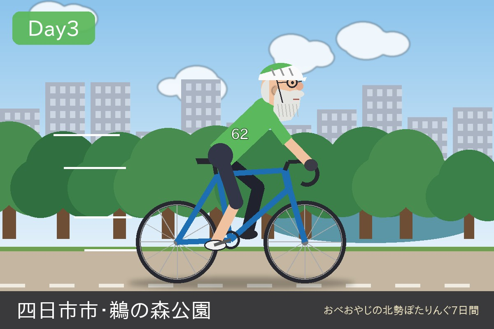

3日目は四日市市へ。近鉄四日市駅からほど近い、街なかの緑のオアシス「鵜の森公園」です。
鵜の森公園は浜田城の跡とされる場所にある公園。ビルに囲まれたエリアなのに、大きな木々と池があって、ひと息つける空間です。
駅周辺は人も車も多いので、無理に車道の流れに乗らず、自転車通行可の歩道では歩行者優先でゆっくり。公園に着いたら駐輪場に止めて、木陰のベンチで休憩しましょう。
街の真ん中でセミや鳥の声が聞こえると、なんだか得をした気分になります。ヒゲをなでながら、しばしボーッとする時間も大事です。
※公園内の自転車の乗り入れ・駐輪のルールや施設の情報は変わることがあります。お出かけ前に各市・公園の最新の公式案内を確認してください。
それではまた明日。安全運転で、ゆっくり行きましょう。
―― おべおやじ（62歳・ヒゲおやじ）
#サイクリング #四日市市 #鵜の森公園 #シニアライフ #ポタリング